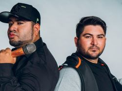

História:
Os Barões da Pisadinha é uma banda musical brasileira de forró eletrônico e tecnobrega formada por Rodrigo Barão e Felipe Barão em dezembro de 2015, nas cidades de Heliópolis e Ribeira do Amparo, ambas na Bahia. O grande sucesso da banda é a música "Tá Rocheda", o grupo ganhou notoriedade nacional quando o jogador Neymar dançou a música e publicou em seu Instagram.
Em 2021, o grupo se tornou o segundo artista brasileiro a conseguir emplacar duas músicas no Top 50 da parada Global do Spotify, a música "Recairei" chegou a 38ª posição e a faixa "Basta Você Me Ligar" chegou a 50ª posição.Antes deles, apenas Anitta conseguiu esse feito, colocando "Downtown" e "Vai Malandra" no top 50 do chart ao mesmo tempo.
Discografia:

Localização de onde nasceu os integrantes do barões da Pisadinha:
Entrevista Barões da Pisadinha:
Hits Barões da Pisadinha:
Instagram- Barões da Pisadinha
Por: Andressa Gomes Onofre.